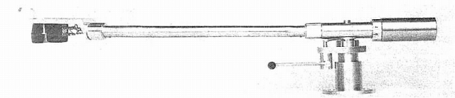
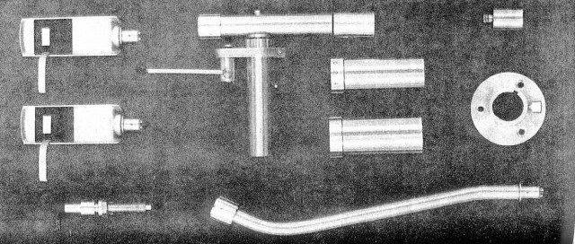
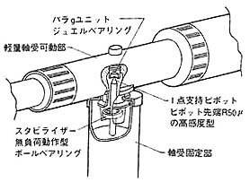
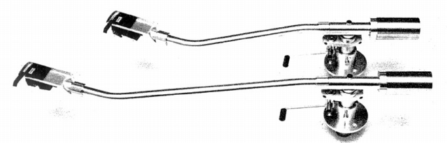
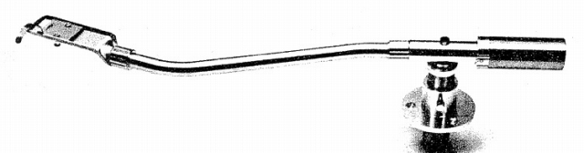

UA-3



■価格 12,800円
■型式 スタティックバランス型
■全長 �o
■実行長 �o
■オーバー・ハング
■トラッキングエラー
■針圧範囲
■アーム高さ調整
■アームベース穴
■アンチスケートディバイス
■アームリフター あり
■ラテラルバランサー
■カートリッジ自重
■線間容量
■発売 1965年
■販売終了 1968年頃
■備考 価格は1965年頃のもの
当初は通常のマグネチック型カートリッジ用のセットが
標準で販売されていたようだ。2段目の写真が標準セット内容。
初期はCPS-40用、CP-15V用のパイプがそれぞれ1,800円で用意されていた。
セット内容をみるとわかるが、メインウェイトが2種あり、カートリッジ
の重量によってウェイトの交換が必要であり、その点はUA-3Nで改良される。
モデルチェンジ目前の1968年頃には標準セットは「UA-3S」と呼ばれるようになっていた。
またコンデンサー型用パイプを標準装備したセットが用意され、「UA-3C」として10,300円で
販売されたようだ。またロングアームの[UA-3L」、簡略版の「UA-3E」も存在する。

UA-3L（14,300円）

UA-3E（9,900円）。アームリフターをオプション扱いにし、シェルの付属を1個にしたバージョン。
スタックスのインデックスへ